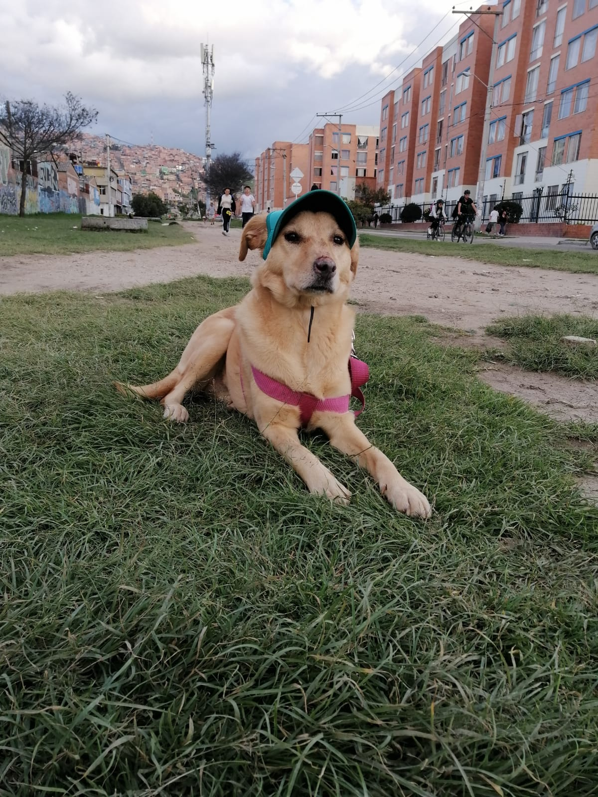

GeoPets

🐶 Soy Milu
Estoy perdida y tengo mucho miedo.
Si me encontraste, por favor ayúdame a volver a casa 🙏
⚠️ Información importante:
Tengo
pénfigo
y necesito
medicamentos diarios con urgencia
.
📞 Mi humano:
313 428 9145
Escribir por WhatsApp
Reportar última ubicación de Milu
 GeoPets
GeoPets